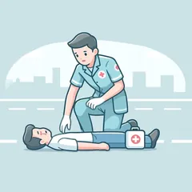
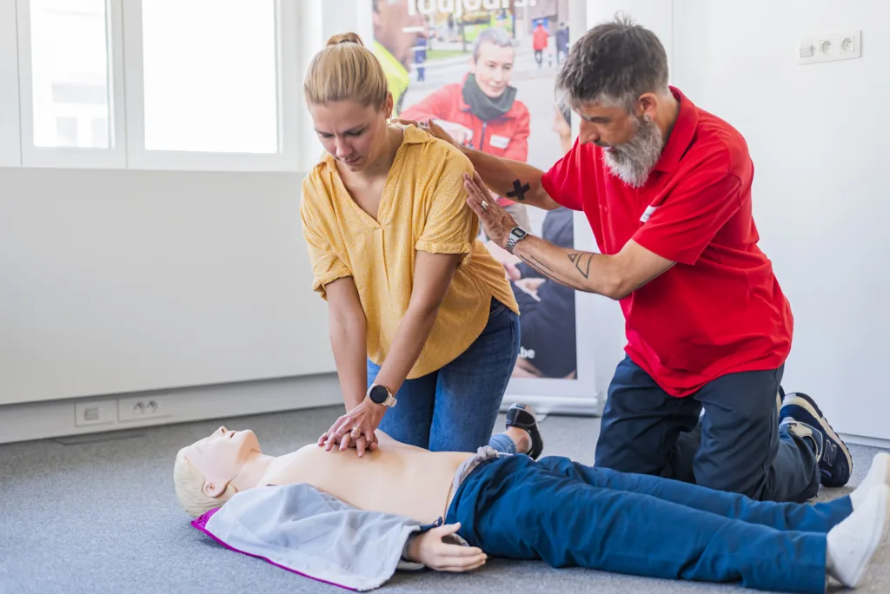
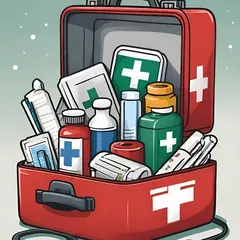
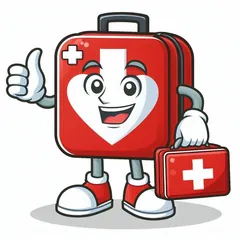
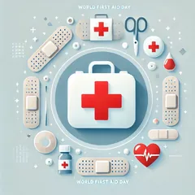

Formateurs expérimentés
Des formateurs habitués au terrain, qui savent transmettre les bons réflexes sous forme de gestes clairs et répétés.
Registre des formationsRéf. WSY-BEPSCatégorie · Premiers secours
Formation · 15 heures
Apprendre les gestes qui peuvent sauver une vie.
Un malaise, un étouffement, un accident : ces situations surviennent sans prévenir. La formation BEPS vous rend capable d'agir vite, avec méthode et sang-froid, en attendant l'arrivée des secours.

01La chaîne des secours
Trois étapes, toujours dans le même ordre. C'est ce réflexe que la formation BEPS installe, jusqu'à ce qu'il devienne automatique.
Repérer le danger, sécuriser la zone et écarter tout risque de sur-accident — pour la victime comme pour vous.
Donner l'alerte au 112 de façon claire et complète, pour que les secours arrivent plus vite et mieux préparés.
Agir avec les gestes appris — réanimation, PLS, compression d'une hémorragie — en attendant l'arrivée des professionnels.
02Ce que vous saurez faire
Six situations que la formation couvre en détail — de la reconnaissance des signes à la conduite à tenir.
Arrêt cardiaque
Reconnaître un arrêt cardiaque, pratiquer un massage cardiaque efficace et utiliser un défibrillateur externe automatisé (DEA) sur un adulte. Chaque minute sans intervention réduit fortement les chances de survie.
Victime inconsciente
Placer en sécurité une personne inconsciente qui respire, pour libérer ses voies aériennes et prévenir l'étouffement, tout en surveillant son état jusqu'à l'arrivée des secours.
Voies respiratoires
Réagir face à une obstruction des voies respiratoires : claques dans le dos, compressions abdominales, adaptées selon que la victime est consciente ou non.
Traumatismes
Stopper une hémorragie abondante par compression directe, gérer une plaie ou un membre sectionné, et prévenir l'aggravation en attendant les secours professionnels.
Détresses courantes
Adopter la bonne conduite face à un malaise cardiaque, un AVC, une brûlure ou une intoxication : reconnaître les signes, positionner la victime et transmettre les bonnes informations.
Chaîne des secours
Donner l'alerte de façon claire et complète au 112, pour que les secours arrivent plus vite et mieux préparés : localisation, nature de l'urgence, état de la victime.
03Programme
Une progression pensée pour transformer des connaissances en réflexes : cadrage, gestes de base, situations spécifiques, puis mise en pratique.
Présentation du déroulement, du matériel utilisé (mannequin, DEA d'entraînement) et des objectifs de la session.
Repérer les dangers, sécuriser la zone et adopter les bons réflexes avant d'intervenir.
Structurer l'appel au 112 : localisation, description de la situation, état de la victime.
Réanimation cardio-pulmonaire, utilisation du défibrillateur (DEA), position latérale de sécurité.
Étouffement, hémorragies et plaies, malaises, brûlures : la conduite à tenir pour chaque situation.
Des scénarios concrets, en petits groupes, pour répéter le schéma d'intervention jusqu'à l'automatisme.
Un temps de synthèse, puis la remise du certificat de participation aux personnes ayant suivi l'intégralité du programme.
04Méthode
La théorie reste courte ; l'essentiel du temps est consacré à la répétition des gestes.
Chaque geste est montré avant d'être reproduit et corrigé individuellement.
Des scénarios concrets et du matériel professionnel — mannequin, DEA d'entraînement.
Pour que chaque participant s'exerce réellement et reçoive un suivi personnalisé.
05Wisy Safety

Des formateurs habitués au terrain, qui savent transmettre les bons réflexes sous forme de gestes clairs et répétés.

Des sessions à effectif limité pour que chaque participant s'exerce réellement et reçoive un suivi personnalisé.

Beaucoup de pratique, peu de théorie descendante : les gestes deviennent des réflexes, pas des souvenirs de cours.

Formation disponible en français, néerlandais et anglais, adaptée à la réalité du terrain belge.
Formation dispensée dans notre centre à Anderlecht — Avenue d'Itterbeek 378, 1070 Anderlecht.
06FAQ
Une autre question ? Consultez le centre d'aide ou contactez-nous.
Le BEPS (Brevet Européen de Premiers Secours) est la formation de Wisy Safety aux gestes de premiers secours : protéger, alerter le 112 et secourir une victime en attendant l'arrivée des professionnels.
15 heures au total, réparties en sessions. La présence à l'intégralité du programme est nécessaire pour recevoir le certificat, chaque module s'appuyant sur le précédent.
70 €, encadrement par nos formateurs et matériel pédagogique inclus.
Non, aucun prérequis médical ou technique n'est demandé. Une bonne compréhension de la langue d'enseignement choisie est nécessaire.
Oui, un certificat de participation attestant le suivi complet du programme est remis en fin de formation.
En français, en néerlandais et en anglais.
Depuis cette page, via « S'inscrire à la formation », ou en nous contactant par téléphone au +32 2 318 86 59 ou par e-mail à info@wisysafety.be.
Inscription · Session premiers secours